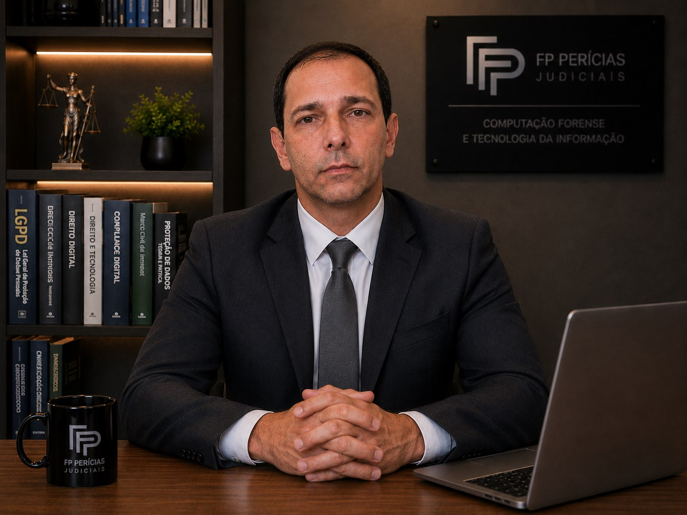

Produzir análises periciais claras, técnicas e fundamentadas, contribuindo para a compreensão da prova em demandas judiciais e extrajudiciais.
Sobre o perito
Atuação técnica voltada à clareza da prova.
A FP Perícias Judiciais apoia demandas judiciais e extrajudiciais que envolvem tecnologia, documentos, assinaturas e evidências digitais, com análises fundamentadas e comunicação objetiva.
Perfil profissional
Fernando Pires
Fernando Alves Pires Neto atua como Perito Judicial e Assistente Técnico em matérias que exigem interpretação cuidadosa de dados, documentos, sistemas e processos tecnológicos, com atendimento em todo o território nacional.
Sua formação reúne Gestão da Tecnologia da Informação, Computação Forense, Grafoscopia e Documentoscopia, com Pós-Graduação em Computação Forense e Perícia Digital — Em andamento, sem indicação de conclusão, e registro CRA-RJ N° 03-08121.

Certificações Microsoft
MCP, MCSE, MCSA e MCSE: Cloud Platform and Infrastructure.
Tribunais e cadastros
Tribunais de atuação: TJMG, TJRJ, TJSP, TJDFT, TRF6, TJSC e TJPR.
Leitura jurídica
Resultados apresentados com estrutura, objetividade e atenção ao contraditório.
Princípios
Missão, visão e valores.
A atuação pericial é orientada por rigor técnico, comunicação objetiva e compromisso com a correta compreensão da prova.
Ser referência em perícias judiciais e assistência técnica nas áreas de tecnologia, documentos e evidências digitais.
Imparcialidade, sigilo, precisão técnica, ética profissional, clareza na comunicação e respeito ao contraditório.
Como o trabalho é conduzido
Do recebimento da demanda à conclusão técnica.
Cada caso é tratado com delimitação de escopo, preservação das informações relevantes e entrega compatível com a necessidade processual.
Entendimento do caso
Leitura inicial da demanda, identificação dos objetivos e organização dos documentos.
Análise técnica
Exame das evidências com metodologia adequada à computação, documentos ou TI.
Entrega fundamentada
Produção de laudo, parecer, quesitos ou manifestação com conclusões claras.